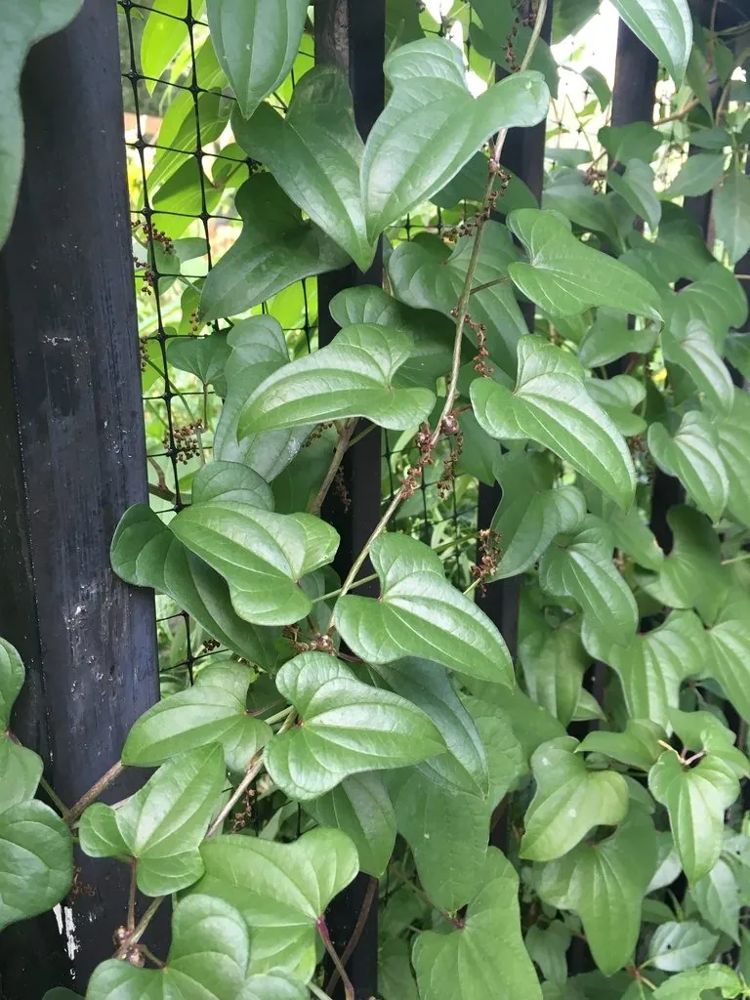

农作物与经济植物 · 植物界
山药 Dioscorea polystachya

山药的地下块茎富含淀粉和黏液质，可炖汤、炒食，也是传统中药材，有补脾养胃之效，栽培历史逾千年。
- 分类
- 门被子植物门纲单子叶植物纲目薯蓣目科薯蓣科属薯蓣属
- 栖息环境
- 温带与亚热带的山地沙壤土，喜温暖、耐旱怕涝
- 地理分布
- 原产中国，现主产于中国河南、山东、河北、山西等地
- 保护级别
- 暂无评估（栽培作物）
物种志
山药是薯蓣科多年生缠绕草本，茎细长，右旋缠绕，可长达数米，常带紫色。叶片三角形或卵形，对生或互生，叶腋常生珠芽（零余子）。地下块茎圆柱形、棒状或掌状，外皮灰褐色，表面密生须根，肉质洁白，富含黏液。雌雄异株，穗状花序，花小，黄绿色。
山药原产中国，栽培历史已有 2000 多年，是重要的药食两用作物，河南焦作一带的“怀山药”最为著名。它喜温暖、光照充足，耐旱怕涝，适宜在土层深厚、排水良好的沙壤土中种植，多用块茎切段或珠芽繁殖。块茎富含淀粉、黏液质和多种氨基酸，可炖汤、清炒、蒸食，是常见的食材；中医认为山药有补脾肺、益肾气之效，是传统滋补药材。山药的地下块茎入土较深，采收需深挖。
形态与习性
- 块茎圆柱形或掌状，肉质洁白
- 茎缠绕，可长达数米，常带紫色
- 叶三角形或卵形，叶腋生珠芽
- 繁殖块茎切段或珠芽繁殖
- 食用炖汤、清炒、蒸食
- 药用补脾肺、益肾气
趣味知识
- 山药的藤蔓会缠绕攀爬，叶腋里还会长出小球芽“零余子”。
- 山药块茎洁白黏滑，切开后黏液容易让手发痒。
- 河南焦作一带的“怀山药”是著名的药食两用品种。